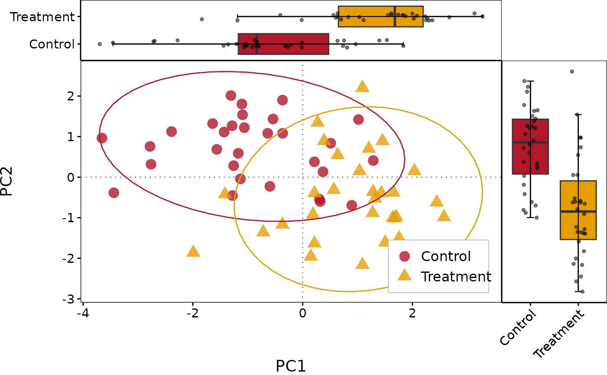
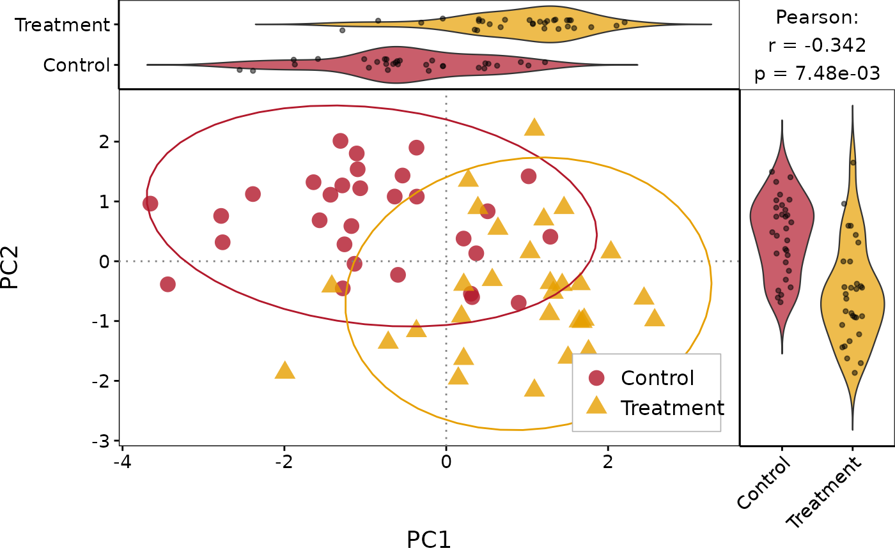
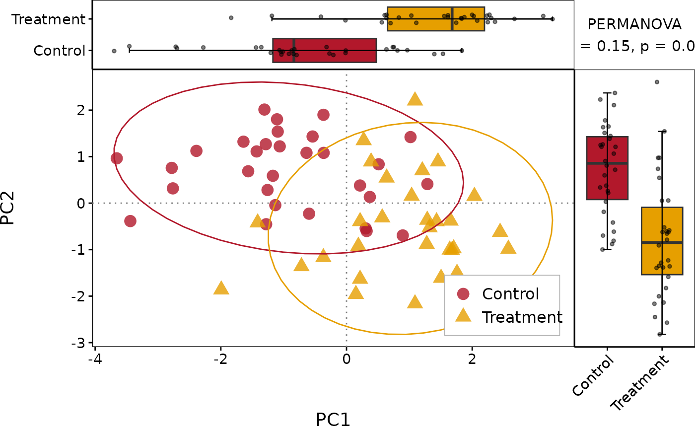

Single-group scatter plot with top and right marginal boxplots (with jitter) and optional annotation panel (PERMANOVA / correlation). Suitable for PCoA/NMDS ordination or gene correlation visualisation.
Usage
PlotScatter1(
data,
x,
y,
group,
group_levels = NULL,
colors = NULL,
shapes = NULL,
point_size = 4,
point_alpha = 0.8,
show_ellipse = TRUE,
ellipse_level = 0.95,
show_refline = TRUE,
show_regression = FALSE,
reg_method = "lm",
show_cor = FALSE,
cor_method = "pearson",
annot_text = NULL,
annot_size = 4,
xlim = NULL,
ylim = NULL,
xlab = NULL,
ylab = NULL,
title = NULL,
marginal_type = c("boxplot", "violin", "violin_box"),
violin_scale = "width",
box_jitter = TRUE,
layout_ratio = c(1, 4),
legend_pos = c(0.85, 0.15),
legend_theme = NULL,
theme_use = NULL,
raster = FALSE,
raster_method = c("scattermore", "ggrastr"),
raster.dpi = 512,
filename = NULL,
width = 10,
height = 8,
dpi = 300
)Arguments
- data
A data.frame.
- x
Column name for the X axis.
- y
Column name for the Y axis.
- group
Column name for the grouping variable.
- group_levels
Group order. NULL = data order.
- colors
Colour vector for groups. NULL = auto palette.
- shapes
Shape vector for groups. NULL = auto.
- point_size
Point size. Default 4.
- point_alpha
Point transparency. Default 0.8.
- show_ellipse
Whether to draw group ellipses. Default TRUE.
- ellipse_level
Ellipse confidence level. Default 0.95.
- show_refline
Whether to show x=0, y=0 reference lines. Default TRUE.
- show_regression
Whether to show a regression line. Default FALSE.
- reg_method
Regression method: "lm" or "loess". Default "lm".
- show_cor
Whether to display correlation coefficient. Default FALSE.
- cor_method
Correlation method: "pearson" or "spearman". Default "pearson".
- annot_text
Custom annotation text (e.g. PERMANOVA result). NULL = none.
- annot_size
Annotation text size. Default 4.
- xlim
Custom X axis limits, e.g.
c(0, 1). NULL = auto (with default 5% expansion). When set, expansion is suppressed (expand = FALSE).- ylim
Custom Y axis limits, e.g.
c(0, 1). NULL = auto.- xlab
X axis label. NULL = column name.
- ylab
Y axis label. NULL = column name.
- title
Plot title. Default NULL.
- marginal_type
Marginal plot type: "boxplot", "violin", or "violin_box".
- violin_scale
Scale method for violin geom:
"width"(default, normalises max-width so both marginals look visually consistent),"area", or"count".- box_jitter
Whether to add jitter points in marginal plots. Default TRUE.
- layout_ratio
Size ratio c(marginal, main). Default c(1, 4).
- legend_pos
Legend position. Default c(0.85, 0.15).
- legend_theme
Legend theme object (e.g.
theme_legend1()). Default NULL.- theme_use
Theme for the main scatter panel. Default NULL (built-in theme).
- raster
Logical. Rasterise scatter points to reduce file size.
FALSE= vector (default).TRUE= raster.- raster_method
Character. Rasterisation backend when
raster = TRUE:"scattermore"(default, fast, requires scattermore) or"ggrastr"(faithful colours, requires ggrastr).- raster.dpi
Integer. Raster resolution in pixels (for scattermore) or DPI (for ggrastr). Default
512.- filename
Output file path. NULL = no save.
- width
Output width in inches. Default 10.
- height
Output height in inches. Default 8.
- dpi
Output resolution. Default 300.
Details
For dual-group scatter with separate marginal panels, see [PlotScatter2()]. For paired scatter with rotated histogram inset, see [PlotScatter3()].
See also
Other scatter plots:
PlotScatter2(),
PlotScatter3()
Examples
library(ggplot2)
# Simulated PCoA data
set.seed(42)
df <- data.frame(
PC1 = c(rnorm(30, -1), rnorm(30, 1)),
PC2 = c(rnorm(30, 0.5), rnorm(30, -0.5)),
Group = rep(c("Control", "Treatment"), each = 30)
)
# Basic usage
PlotScatter1(df, x = "PC1", y = "PC2", group = "Group")

# With correlation and violin marginals
PlotScatter1(df, x = "PC1", y = "PC2", group = "Group",
show_cor = TRUE, marginal_type = "violin")

# Custom annotation (e.g. PERMANOVA)
PlotScatter1(df, x = "PC1", y = "PC2", group = "Group",
annot_text = "PERMANOVA\nR2 = 0.15, p = 0.001")
